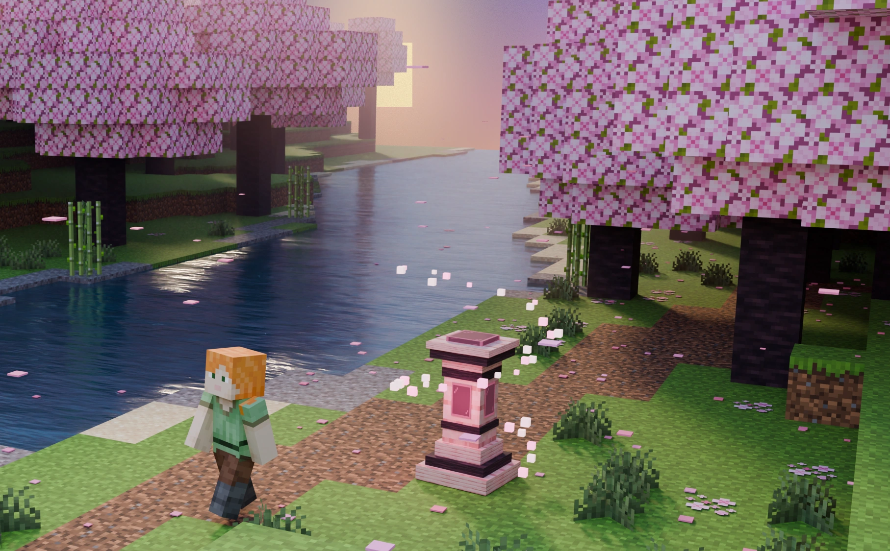
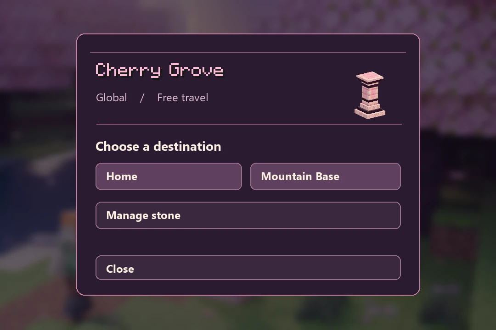

Farstep Datapack
Installs recipes, travel, natural discoveries, and server settings in your world.
Minecraft Java 26.3
Travel further, faster.
Leave a waystone at home and another where the trail takes you. Next time, choose where you want to go.

Player guide
Place a stone at each stop you want to revisit in the Overworld. The travel menu lists every stop you can use.
Pick up a lodestone to unlock the recipes. If natural discoveries are on, some styles also appear while you explore.
Set one at home and one where you want to return. Leave room beside each stone so you have a safe place to arrive.
Right-click a stone and pick a stop. Crouch and right-click your stone to rename it. Use a pickaxe to take it with you.

Menu illustrations
Recipe book
Every style is craftable. Start with one lodestone and two ender pearls, then add the two ingredients for your chosen style.
Minecraft Java 26.3
Get both ZIPs from the latest Farstep release on GitHub.
Installs recipes, travel, natural discoveries, and server settings in your world.
Displays waystone models, menu artwork, and English and French text on each player's client.
datapacks/ folder.resourcepacks/ on each Minecraft client and enable it in Options./datapack list enabled.Run /function farstep:config as an operator. Travel is free by default. You can charge a fixed amount or charge by distance, in XP points or levels. The same menu controls natural discoveries and protection for private stones.
For a test world, /function farstep:give_all gives you one of every style.